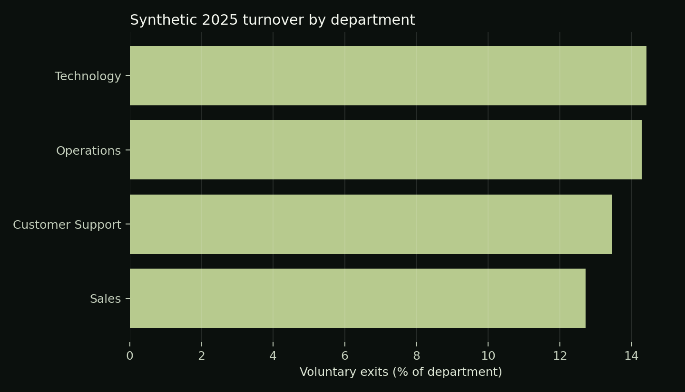

Independent Portfolio Project | Synthetic Dataset
Workload, engagement
and voluntary turnover.
A workforce planning case that separates useful department-level questions from unsupported claims about individual employees.
720 fictional employees · Four departments · 2025 snapshot.
No real workers or organizations are represented.
Business question
Where should HR investigate?
The analysis compares turnover, overtime, absence and available engagement scores by department. Employees who exited averaged 6.9 more Q4 overtime hours than employees who stayed in this designed sample.
That difference supports a workload question. It does not establish that overtime caused exits, and it is not an employee-level risk score.

Methods demonstrated
- Pandas validation, missing-value handling and grouped summaries
- Weighted rate calculations from counts
- Wilson confidence interval for a proportion
- Welch comparison of two group means
- Reproducible generation and automated tests
Responsible interpretation
The simulation deliberately encodes relationships among workload, engagement, tenure and exit probability. A real analysis would require HR-system reconciliation, access controls, privacy review, matched time windows and qualitative context.
Files to inspect
Start with README.md, then read analyze.py from data generation through validation and aggregation. Check department_summary.csv against the row-level file and use report.json for full-precision statistical results.